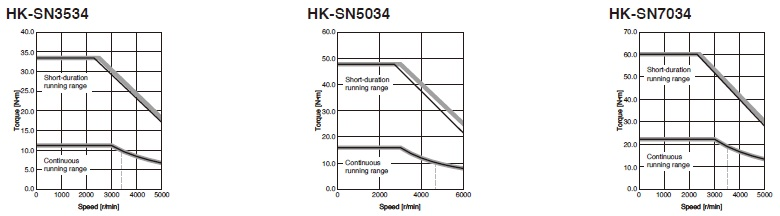

MELSERVO-JET Series Rotary Servo Motor Torque Characteristics

HK Series (200 V)
HK-KN Series Torque Characteristics (Note 1)
 : For 3-phase 200 V AC
: For 3-phase 200 V AC : For 1-phase 200 V AC
: For 1-phase 200 V AC
- Notes:
- 1. Torque drops when the power supply voltage is below the specified value.
 : A rough indication of the possible continuous running range for 3-phase 170 V AC
: A rough indication of the possible continuous running range for 3-phase 170 V AC - 2. For HK-KN053_J_ (with an oil seal), use the servo motor at a derating rate of 80 %.
- 3. When using a combination of the servo motors of over 750 W and MR-JET-100G_ or MR-JET-200G_ with a 1-phase power supply, use the servo amplifiers at
75 % or less of the effective load ratio.
HK-FN Series Torque Characteristics (Note 1)
- : For 3-phase 200 V AC
- : For 1-phase 200 V AC
- Notes:
- 1. Torque drops when the power supply voltage is below the specified value.
: A rough indication of the possible continuous running range for 3-phase 170 V AC - 2. When using a combination of the servo motors of over 750 W and MR-JET-100G_ or MR-JET-200G_ with a 1-phase power supply, use the servo amplifiers at
75 % or less of the effective load ratio.
HK Series (400 V)
HK-KN Series Torque Characteristics (Note 1)
- : For 3-phase 400 V AC
- : For 3-phase 380 V AC
- Notes:
- 1. Torque drops when the power supply voltage is below the specified value.
: A rough indication of the possible continuous running range for 3-phase 323 V AC
HK-SN Series Torque Characteristics (Note 1)
- : For 3-phase 400 V AC
- : For 3-phase 380 V AC

- Notes:
- 1. Torque drops when the power supply voltage is below the specified value.
: A rough indication of the possible continuous running range for 3-phase 323 V AC
HG Series (200 V)
HG-KNS Series Torque Characteristics (when connected with a 200 V servo amplifier) (Note 1)
- : For 3-phase 200 V AC
- : For 1-phase 230 V AC
- Notes:
- 1. Torque drops when the power supply voltage is below the specified value.
HG-SNS Series Torque Characteristics (when connected with a 200 V servo amplifier) (Note 1)
- : For 3-phase 200 V AC
- : For 1-phase 230 V AC
- Notes:
- 1. Torque drops when the power supply voltage is below the specified value.
- 2. When using a combination of the servo motors of over 750 W and MR-JET-100G_ or MR-JET-200G_ with a 1-phase power supply, use the servo amplifiers at
75 % or less of the effective load ratio.
*The characteristics and numerical values without tolerances are representative values.